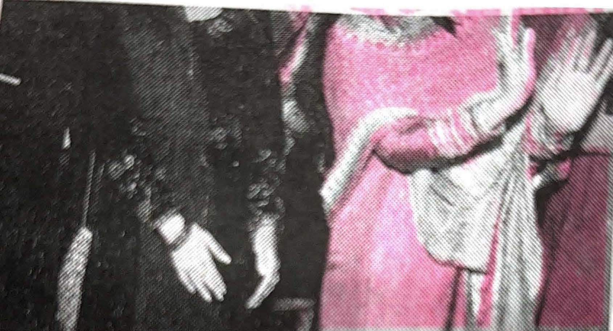

Volume 2
The folklore--Sunder Mundriye--is actually the tale of a man called Dulla Bhatti, who is said to have lived in Punjab during the reign of Mughal Emperor Akbar. Being quite the 'Robin Hood' back in the day, Dulla Bhatti used to supposedly steal from the rich, and rescue poor Punjabi girls being taken forcibly to be sold in slave markets. He then went on to arrange their marriages to boys of the village, and provided them with dowries (from the stolen money). Amongst these girls were Sundri and Mundri, who have now come to be associated with Punjab's folklore, Sunder Mundriye.
